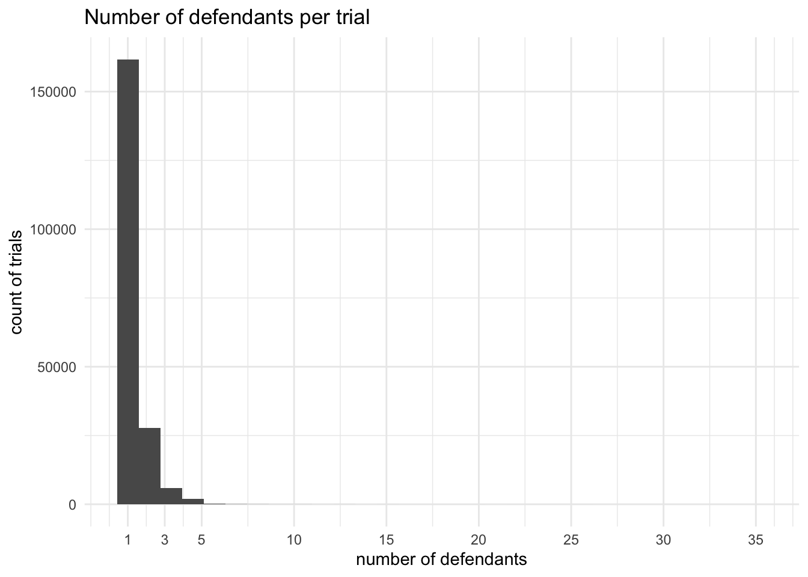
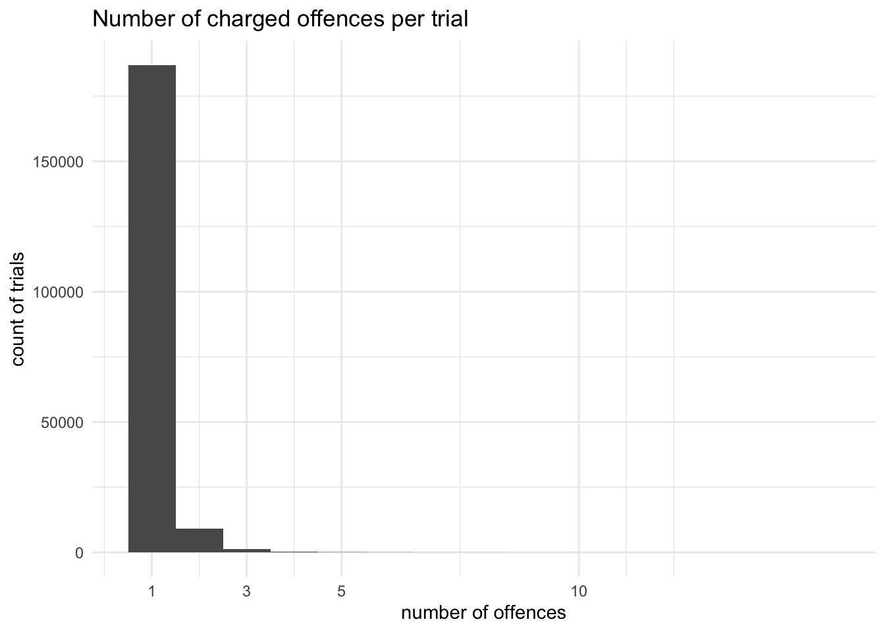
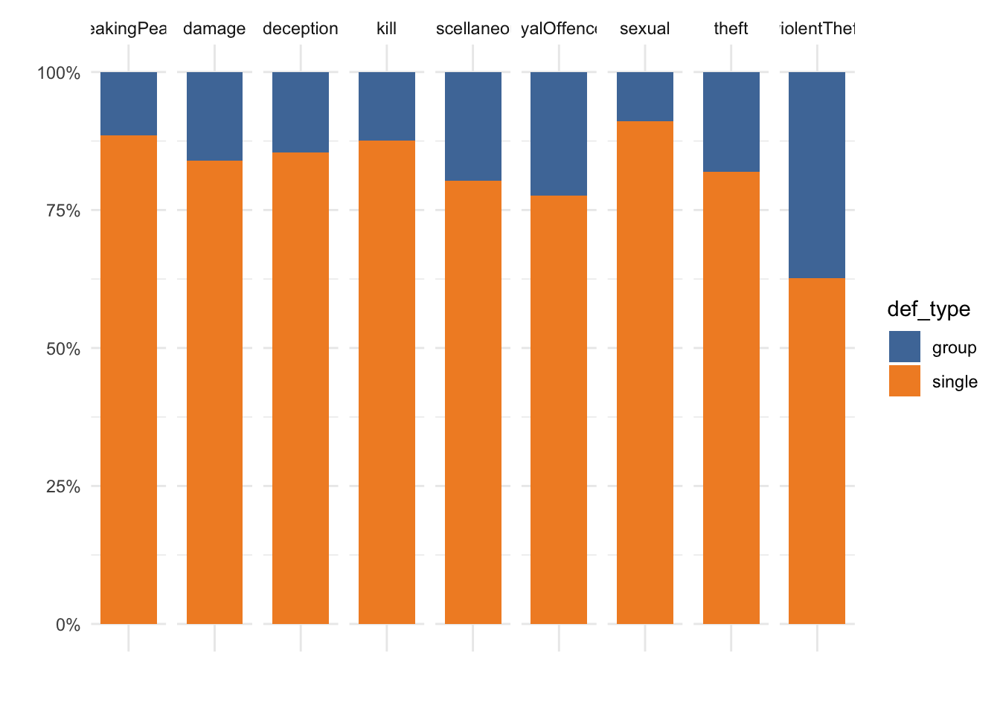
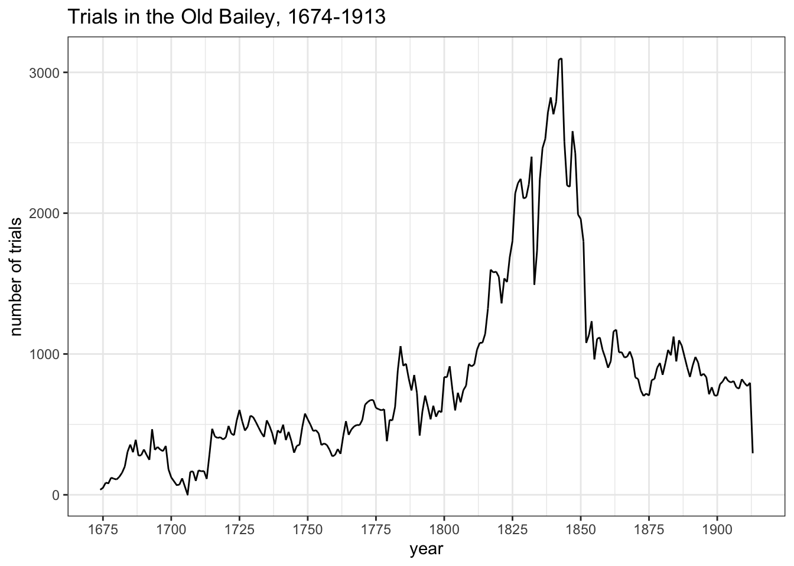
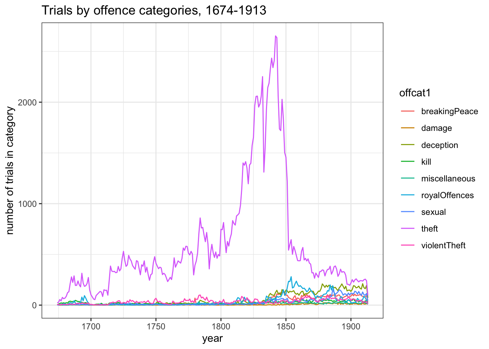
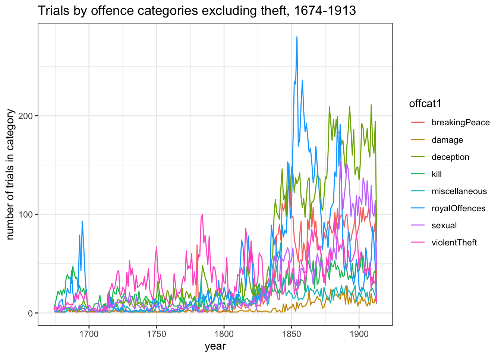
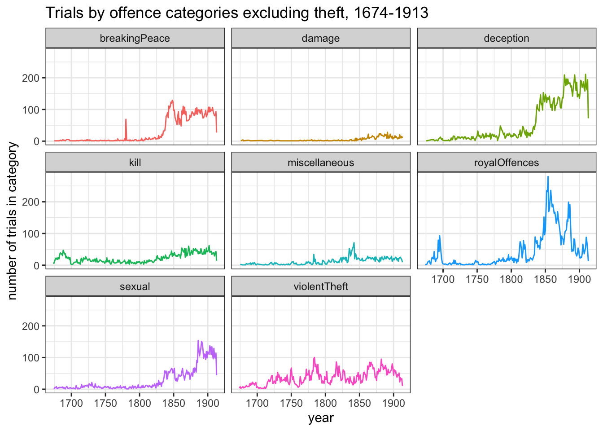
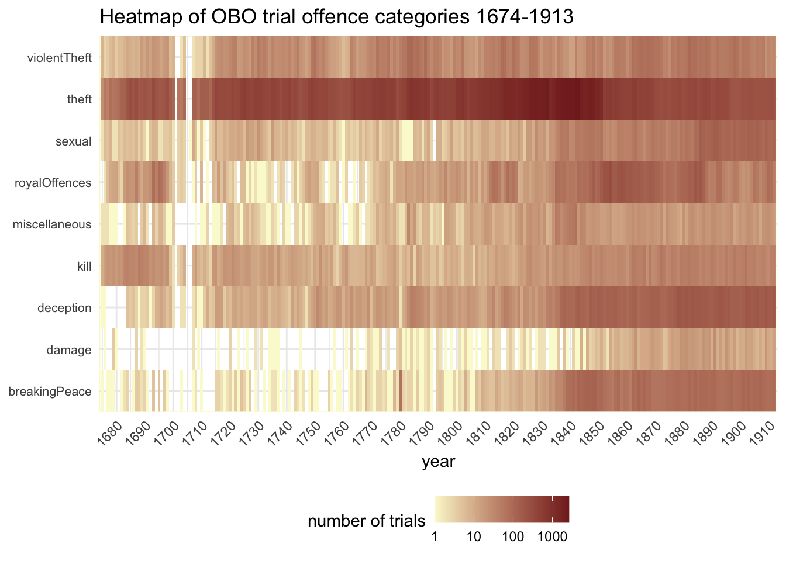
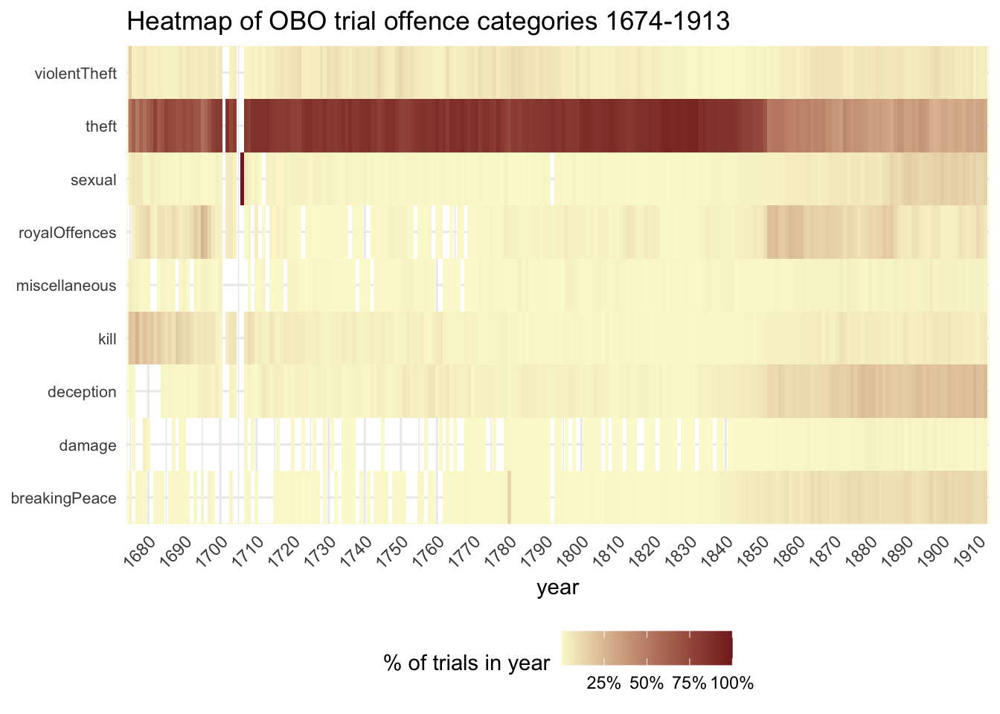
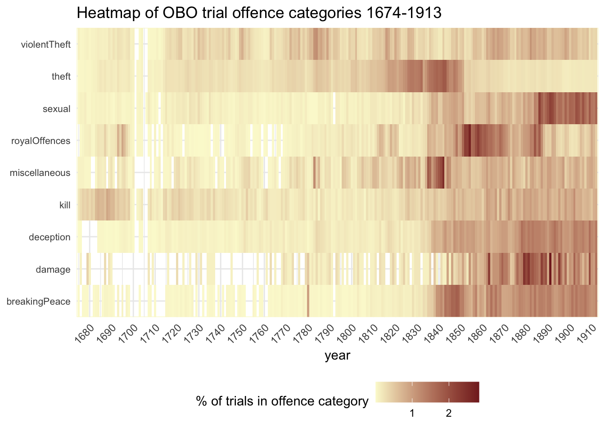

| id | year_month_day | offcatcount | offcat1 | defcount | def_type |
|---|---|---|---|---|---|
| 197562 | 1913-02-04 | 1 | deception | 1 | single |
| 197563 | 1913-02-04 | 2 | royalOffences | 1 | single |
| 197564 | 1913-02-04 | 1 | breakingPeace | 1 | single |
| 197565 | 1913-02-04 | 1 | deception | 1 | single |
| 197566 | 1913-02-04 | 1 | deception | 1 | single |
| 197567 | 1913-02-04 | 2 | deception | 1 | single |
| 197568 | 1913-02-04 | 1 | deception | 1 | single |
| 197569 | 1913-02-04 | 1 | deception | 1 | single |
| 197570 | 1913-02-04 | 2 | theft | 1 | single |
| 197571 | 1913-02-04 | 1 | sexual | 2 | group |
| 197572 | 1913-02-04 | 4 | theft | 1 | single |
| 197573 | 1913-02-04 | 2 | sexual | 1 | single |
| 197574 | 1913-02-04 | 1 | breakingPeace | 1 | single |
| 197575 | 1913-02-04 | 1 | kill | 1 | single |
| 197576 | 1913-02-04 | 1 | breakingPeace | 1 | single |
| 197577 | 1913-02-04 | 2 | deception | 1 | single |
Old Bailey Proceedings Part 1: Offences
OBO
crime
Introduction
What are the Old Bailey Proceedings? That’s the name most commonly given to a series of trial reports that were published from 1674-1913:
the largest body of texts detailing the lives of non-elite people ever published, containing 197,745 criminal trials held at London’s central criminal court.
They have been digitised by the Old Bailey Online project (OBO).
I’ve been project manager for this and a number of spin-off projects (which I’ll undoubtedly write about in future posts) since 2006. And yet I only started to really dig into the Proceedings data quite recently. This is because it consists of more than 2000 intimidatingly complicated XML files, reflecting the complexity of a criminal trial - there can be multiple defendants, multiple charged offences and multiple outcomes. The central aim of the project from its conception was to accurately represent this complexity as well as provide searchable full text.
In fact, I spent several years cheerfully encouraging others to use our data while I had no real idea how to go about doing so myself. In 2011, the project released the Old Bailey API, and I started to tinker with that, but I didn’t really get very far, until a couple of years ago I finally bought myself a book on XQuery and got down to it. And then I started to discover exactly how complicated the XML is. (So I’ve also been thinking about ways to make it more accessible; putting the XML files on our institutional repository is a good start but it’s really just a start.)
The data
There are two facets to the the Proceedings data: firstly, structured markup that enables searching and quantitative analysis of many aspects of the published trials (especially the characteristics of defendants, offences, jury verdicts, sentences); and secondly, the full text of the reports, amounting to more than 125 million words in total.
My first two posts are tasters of a few of the structured data categories: here, I’ll look at how offences tried at the Old Bailey changed over the 250 years documented in the Proceedings; in the second post, I’ll look at defendants’ gender and offending. In subsequent posts I’ll start to explore the text of trial reports.
The variables I’ll be working with:
- year of trial
- offence count - number of offences charged per trial
- offence categories (first listed if there were multiple offences)
- defendant count - number of defendants per trial. This has also been used to create:
- defendant type - single or group (this is really just for convenience)
Along the way, we’ll look at several different ways of visualising data, and their different vices and virtues. The most familiar to historians will be text tables, bar charts and line graphs. But I’m also going to look at something most historians are less likely to have used: heatmaps.
(There’s more detail in the R code and at the end of the post about the dataset.)
Here’s a little slice of what it looks like:
First views
Having said that trials can be varied in terms of numbers of defendants, offences and so on, a histogram makes it clear that in fact the vast majority have a single defendant accused of a single offence. The highest number of defendants in one trial is actually 35, but there are so few trials with more than 8 defendants that the bars aren’t even visible on the chart; a similar thing happens with offence counts.
But I’m not entirely going to forget that there are 35968 trials (18.2% of the total) that do have more than one defendant - they might not have the same characteristics as single defendant trials.


There are nine broad offence categories in the OBO data (with several sub-categories in each category which I won’t consider today):
| offcat1 | n |
|---|---|
| breakingPeace | 7215 |
| damage | 993 |
| deception | 13630 |
| kill | 5243 |
| miscellaneous | 2814 |
| royalOffences | 10458 |
| sexual | 6888 |
| theft | 141894 |
| violentTheft | 8553 |
A quick explanation of the categories (more info):
- breakingPeace: various sorts of disorderly behaviour including assault and riot
- damage: damage to property, eg arson, smashing windows
- deception: mainly fraud and forgery, also perjury
- kill: murder, manslaughter, infanticide, etc
- miscellaneous: anything that doesn’t fit into the main categories or couldn’t be categorised (because it’s so assorted I’ll be pretty much ignoring it)
- royalOffences: crimes against the authority of the Crown, government or Church, eg treason, sedition and coining
- sexual: includes rape, sexual assault, sodomy, bigamy, keeping a brothel
- theft: non-violent theft including larceny, burglary and housebreaking, pocket picking, shoplifting, animal theft, as well as receiving stolen goods
- violentTheft: theft with violence - robbery and highway robbery
As you can see, theft dominates completely - it accounts for 71.8% of all trials. This often causes major headaches for visualisation - theft can just overwhelm everything.
Before I move on to that problem, though, I want to go back to the question of possible differences between single- and multiple-defendant trials, and I can start by looking at whether they’re tried for different types of offence. The answer is: not that much variation in most categories. Robbery, however, tends to be a group crime (put away your romantic notions of lone gentlemen highwaymen), and sexual offences tend to be committed alone.

Offences tried over time
Let’s start with an overview of annual numbers of trials from 1674 to 1913. There are quite a lot of gaps in the records until about 1715, and the very pronounced dip at the beginning of the 18th century needs to be viewed very cautiously. In addition, in the early decades the Proceedings were not intended to be comprehensive. It’s thought that most trials were reported (if only briefly) during the 18th century, though the scale of omissions is not really known. By the beginning of the 19th century, the Proceedings were a semi-official record of the court and gaps should be few and far between.
The most obvious thing in the graph is the massive increase in trials from the early 19th century, which very suddenly drops away again after about 1845. Did Londoners become much more criminal for 3-4 decades, and then suddenly stop breaking the law again? Very unlikely!
The increase can probably be largely accounted for by rapid growth in London’s population (I should dig out some population numbers) and quite possibly from expansion of the city’s police forces. Explaining the subsequent decrease is simpler: it was the result of changes in policy which channelled the prosecution of less serious crimes away from the Old Bailey (to magistrates’ courts). As we’ll see in a moment, that had a profound impact not just on numbers but also on the characteristics of prosecuted trials.

I want to look in more detail at the patterns of offending by category within this, but this kind of graph is not ideally suited to the task, because of the excess of theft trials. It’s pretty hard to see what’s happening with any of the other categories in much of this chart:

The one thing you can see clearly is that theft accounts for most of the mid-19th-century drop in numbers - indeed, the other categories show increases. But it’s still hard to pick out any meaningful details. If I repeat the graph but take out theft completely, it’s easier to grasp the scale of growth in the other categories, but it’s still crowded and hard to pick out individual lines.

This is another case where faceting is useful. It neatly separates out all the confusion of the competing lines and highlights the different trends.

But still, I’d like a better way to visualise and compare all the categories at once. A heatmap is much better at this than line graphs: each category in each year is represented by a single tile and the darker a tile, the more trials there were in that category.

You need to look quite carefully at the legend for this first example. It uses a logarithmic scale rather than linear scale. This is particularly useful for data like this which has a very wide range of values. It de-emphasises the rise and fall in theft prosecutions c.1800-1850. But you can now see changes in the smaller offence categories much more clearly.
One of the most striking short-term blips is in the breakingPeace category in 1780, which is largely down to 64 trials in the Old Bailey session of 28 June. 18th-century historians may guess that this has something to do with the Gordon Riots in early June 1780. The Gordon Riots were among the most serious and destructive domestic disturbances ever to take place in London; just how much so is highlighted here remarkably well.
The graph suggests other potentially interesting variations. Trials in the deception category seem to form a consistently higher profile from around 1840. The royalOffences category (which largely consists of coining rather than more exciting high treason trials) appears busy in the late 17th century, picks up again briefly in the 1810s and then has another run from c.1850-85. And sexual offences seem to become more numerous from around 1885.
But so far it’s all been dealing with numbers, and as we could see in the line graph, those changed a lot - short term and long term - during the period covered by the graph. So I’ve re-done the heatmap so that each tile now represents the category as a percentage of all trials in that year.

This approach reinstates theft pre-eminence and de-emphasises short-term and smaller changes in other categories. Once again theft’s growing dominance looks a much more gradual long-term shift than in the first line graph - and again, the suddenness and degree of the mid-19th-century fall is confirmed again.
It’s inevitable that a big decrease in the proportion of trials in one category is going mean other categories must increase, but it’s much more noticeable in some categories than others (breakingPeace, deception, royalOffences, sexual), and with varying timings.
It will come as no great surprise to historians of violence that the killing category declines markedly as a proportion of trials after the end of the 17th century. But even that isn’t entirely straightforward. I think it looks more obvious than it did on the first heatmap because of the selective and rather sensationalist reporting of early Proceedings in which murders were more likely to be reported than less ‘exciting’ crimes.
And beware! In 1706 there is a very dark tile for sexual offences. That’s simply because there’s only one surviving file for that year, containing a single trial for bigamy. In history data, if something looks wacky, it’s usually because there’s something up with the data, not the history, and only occasionally because of something really interesting like the Gordon Riots.
Here’s one more perspective using a heatmap. In this one, tiles represent a category in one year as a percentage of the total for that category.

Of course, this view completely flattens out the very different numbers in each category, but it has the great benefit of clarifying patterns within categories. We can see the variations in post-1850 trends, and maybe even intriguing short-term blips. Why is there a dark patch for breakingPeace in the 1840s and for damage in the 1880s, for example?
Future questions
As I’ve mentioned, a further question to be explored is the relationship between these prosecution patterns and London’s population growth. Another is the relationship between prosecutions in the Old Bailey and other London courts. The Digital Panopticon, another project I’ve recently worked on, has digitised a series of records for the Middlesex Sessions from 1836-1889, and I’ll be able to take a look at those and do some comparisons.
Resources
About the Old Bailey Online project
Inspirations for the heatmaps:
Technical notes
My current workflow for producing tabular data from the OBO XML has two steps:
- Query the XML using BaseX to extract data including offence category (or categories), defendant gender(s) and session date for every trial in the Proceedings and exported it as CSV. (Tools note: BaseX is a very useful cross-platform XML database app, which I heartily recommend. It’s lightweight but can handle large amounts of data.)
- Import the CSV data into a MySQL database for additional work: in this case, for each trial, I calculated offence and defendant counts; I also added trial word counts (which I’d made separately). For the sake of simplicity in this analysis, I’ve also added a column that contains only the first listed offence category for each trial, and did the same thing for defendant gender. (Tools note: my MySQL database app of choice on a Mac is SequelPro; I haven’t yet found one I like as much for Windows but generally use HeidiSQL.)
For this post, I exported the data back out again to a CSV file to work with in RStudio. (There are R packages like dbplyr to query the database directly, but I want to keep this site as simple and self-contained as I can.)
In R itself I’ve done a bit of cleaning/tidying/filtering and I’ve added some new variables: a) year of trial, and a properly date-formatted session date; and b) a trial type based on the defendant count (‘single’ for one individual or ‘group’ for two or more). In the future I’ll probably do more of step 2 directly in R, but in order to get going I wanted to use data I already had to hand that didn’t need much additional work.